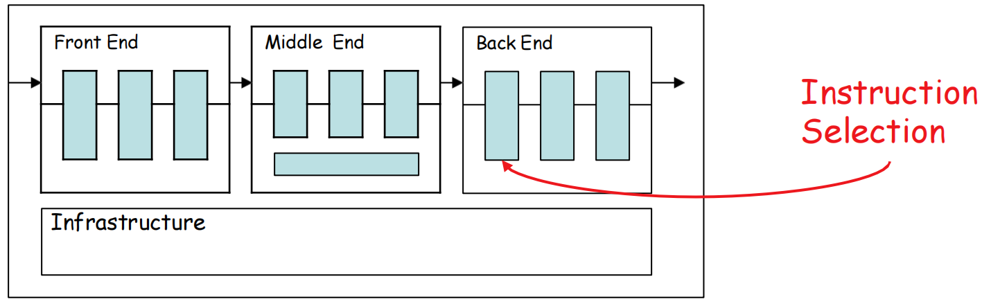
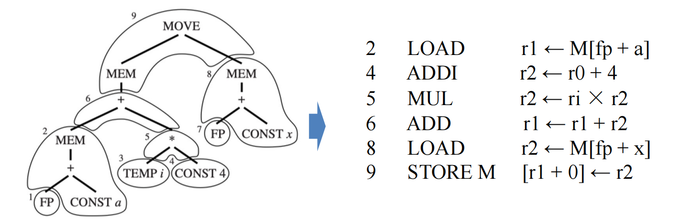
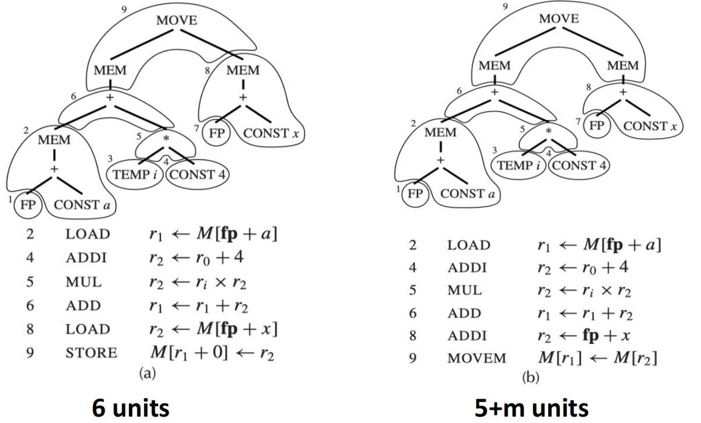

9 Instruction Selection 指令选择¶
参考资料：
- 姚培森老师2024~2025学年春夏ch9ppt
- wcjj的笔记
- 伟大的Gemini 2.5 pro deep research
9.1 指令选择概述¶

指令选择阶段的任务是以排好序的规范树为输入，生成“伪汇编代码”（Pseudo-assembly Code）- 假设有无限数量的虚拟寄存器。
- 指令选择的本质，是一种形式化的模式匹配（Pattern Matching）
- 对于树状结构的IR而言，最自然的匹配方式就是树覆盖（Tree Covering）
- 用指令完整且无重叠地去覆盖整个IR树
9.1.1 Jouette架构¶
Jouette是一个典型的RISC（精简指令集计算机）风格的架构，其设计遵循“加载/存储”（load/store）原则，即算术运算只能在寄存器之间进行，与内存的数据交换必须通过专门的加载（LOAD）和存储（STORE）指令完成，特性如下：
- 通用寄存器文件：拥有一组通用寄存器，可以存放数据或地址
- 零寄存器：寄存器
r0的值永远是0 - 单周期延迟：为简化分析，我们假设除特殊的
MOVEM指令外，所有指令的执行时间（延迟）都是一个时钟周期
指令集及其对应的树：

以a[i]:=x这条指令选择的两种方式为例：


- 只要我们的指令集中包含了能够覆盖每一种IR基础节点（如
+,*,MEM,CONST等）的指令，那么我们总能保证为任何合法的IR树找到一个有效的平铺方案。这为算法的正确性提供了底线保障。 - 优化的目标，则是在这个基础上，通过智能地选用“大瓷砖”，找到比这个底线方案更“好”的平铺。
9.1.2 最优平铺 Optimal Tiling 与 最佳平铺 Optimum Tiling¶

我们以执行周期数作为评估成本。在Jouette架构中，我们假设大部分指令成本为1，而某些特殊指令（如MOVEM）可能有更高的成本。
- 最佳平铺 (Optimum Tiling)：指一个全局最优的方案。在所有可能的平铺方案中，该方案的总成本是最低的。找到最佳平铺是指令选择的终极目标。
- 最优平铺 (Optimal Tiling)：指一个局部最优的方案。在该方案中，任何两个相邻的瓷砖都不能被合并成一个成本更低的单一瓷砖。
这两者之间的关系是：一个最佳平铺方案，必定也是一个最优平铺方案；但反之不成立，一个最优平铺方案，不一定是最佳的。
9.2 算法¶
9.2.1 Maximal Munch 最大匹配¶
思想：
贪心（Greedy）、自顶向下（Top-down），在树的当前节点，总是选择能够匹配的、包含节点数最多的瓦片
- 从IR树的根节点开始
- 在当前节点，寻找能够匹配的最大的瓦片（即覆盖节点数最多的树模式），用这块瓦片覆盖对应的IR树部分
- 对所有未被该瓦片覆盖的子树的根节点，递归地执行步骤2，直到整棵树被完全覆盖
指令生成：
整棵树被瓦片覆盖后，就进入了指令生成的阶段。虽然瓦片选择的过程是自顶向下的，但指令的生成（发射）顺序却是后序遍历（Postorder treewalk）的。这意味着，编译器会先为子节点（即子问题）生成指令，然后再为父节点（覆盖当前节点的瓦片）生成指令。
例子：
可以认为CONST 4需要一个额外的指令来计算，比如可能是ADDI r2 ← r0 + 4

9.2.2 Dynamic Programming 动态规划¶
基本思想：
目标是最佳平铺，采用一种自底向上（Bottom-up）的、基于成本计算的策略。
其核心原则是对于树中的每一个节点，计算出覆盖以它为根的子树的最小成本。
- 成本：考察所有能够以当前节点为根进行匹配的瓦片。对于每一个可能的瓦片，其覆盖成本等于该瓦片对应指令的自身成本，加上它所有未覆盖的子树的（已经计算出的）最小成本之和。算法会比较所有这些可能性，并为当前节点记录下那个使其总成本最小的瓦片选择。
算法：
- 自底向上遍历树：从叶子节点开始，向根节点方向处理
- 计算节点成本：对于当前处理的节点
n，执行以下操作：- 找出所有能以
n为根匹配的瓦片集合{t1, t2,...} - 对每个瓦片
ti，计算其总成本：\(Cost(t_i)=Cost(instruction_{t_i})+∑Cost(subtree_j)\)，其中\(Cost(subtree_j)\)是子树j在前序步骤中已计算出的最小覆盖成本 - 比较所有\(Cost(t_i)\)，找出其中的最小值
- 在节点
n上存储这个最小成本，以及达到这个最小成本所选择的瓦片
- 找出所有能以
- 遍历至根节点：当根节点的最小成本计算完毕，也就找到了整棵树的最佳平铺方案
例子：
以MEM(PLUS(CONST(1), CONST(2)))为例：

整体流程如下：
指令生成：
- 从树的根节点开始，进行一次前序遍历
- 在访问每个节点时，算法首先查看之前为它记录下的最佳瓦片
- 递归地为这块瓦片的所有子节点（即那些需要预先计算结果的子树）调用代码发射函数
- 递归返回后，再发射当前瓦片所对应的指令
以上面的例子为例，发射过程如下：
- 从根节点
MEM开始。其最佳瓦片是LOAD(复合)，该瓦片有一个子节点CONST 1 - 递归调用，为
CONST 1发射代码。CONST 1的最佳瓦片是ADDI，它没有子节点 - 发射指令：
ADDI r1 <- r0 + 1 - 从
CONST 1的调用返回 - 发射
MEM节点对应的指令：LOAD r2 <- M[r1 + 2]
两个算法的评估：
- T - 瓦片（tile）的总种类数量
- K - 一个匹配的瓦片平均覆盖的节点数
- K' - 需要检查的最大瓦片尺寸（即最大的瓦片包含的节点数）
- T' - 每个树节点平均能匹配上的瓦片数量
- N - 输入的中间表示（IR）树中的总节点数
基于以上参数，给出了两种算法的运行时间复杂度：
- 最大匹配 (Maximal Munch) - 其时间复杂度与\(\frac{(K' + T')*N}{K}\)成正比
- 动态规划 (Dynamic Programming) - 其时间复杂度与\((K' + T')*N\)成正比
对于一个给定的目标机器架构，K、K' 和 T' 都可以被看作是常量，因此，上述两种算法的运行时间都是线性的，即与输入树的大小 N 成正比。
9.2.3 Tree Grammar 基于树文法的通用方法¶
核心思想
核心动机是自动化 。其目标是创建指令选择器生成器。开发者不再需要用过程式的代码去实现模式匹配，而是可以用一种高层次的、声明式的语言来描述目标机器的指令集。
编译器用正则表达式来描述词法，用上下文无关文法（CFG）来描述语法。类似地，我们可以用一种特殊的树文法（Tree Grammar）来描述指令选择中的瓦片。
在树文法中：
- 非终结符（Nonterminals）：通常代表一种值的“类别”，如
reg（表示值在寄存器中）或mem（表示值在内存中） - 产生式规则（Production Rules）：每个产生式代表一个瓦片/一条指令，它描述了一个树模式（产生式的右侧）如何被归约为一个非终结符（产生式的左侧）
每个规则通常都关联三样东西：
- 一个树模式产生式
- 一个与该规则相关的成本
- 一个代码生成模板或动作
例如，一条ADD指令可以被描述为： reg_i -> +(reg_j, reg_k) { cost: 1, action: "add r_i, r_j, r_k" }
这条规则的含义是：一个由根节点+和两个reg类子节点构成的树模式，可以被“归约”为一个reg（即计算结果存放在一个寄存器中），这个操作的成本是1，并且应该生成add汇编指令。
通过这种方式，整个指令选择过程就转换成了：用这套树文法去“解析”输入的IR树，并找到一个成本最低的解析（推导）过程。
这使得编译器后端更加健壮、易于维护，并且极大地简化了向新架构移植的工作——理论上，只需要为新架构编写一份新的树文法描述文件即可。像Twig、BURG以及现代编译器基础设施（如LLVM）中的TableGen工具，正是这种强大思想的实践体现。
例子：

| 编译器任务 (Compiler Task) | 方法 (Approach) |
|---|---|
| Twig | 自底向上的动态规划 (Bottom-up dynamic programming) |
| BURG | 自底向上的重写文法 (Bottom-up rewriter grammar) |
| LLVM TableGen | 模式匹配表生成 (Pattern matching tablegen) |
9.3 CISC vs RISC¶
对于RISC架构，由于指令功能单一、成本均匀，Maximal Munch这类简单的贪心算法往往就能找到接近甚至就是最佳的平铺方案。但在CISC上，“最优”与“最佳”之间的鸿沟会变得非常明显，必须动用动态规划这类更强大的算法才能获得高质量代码。
| 特性 | RISC (精简指令集) | CISC (复杂指令集) |
|---|---|---|
| 寄存器 | 数量多 (如32个)，通用 | 数量少 (如8-16个)，有专用类别 |
| 算术运算 | 仅在寄存器间进行 (Load/Store) | 可直接对内存操作数进行运算 |
| 寻址模式 | 简单，种类少 (如M[reg+const]) |
复杂，种类繁多 |
| 指令格式 | 通常为“三地址” (r1 <- r2 + r3) |
通常为“二地址” (r1 <- r1 + r2) |
| 指令长度 | 固定长度 (如32位) | 可变长度 |
| 指令副作用 | 通常没有，一条指令一个效果 | 可能有 (如地址自增) |
| 挑战 | 解决方案 | 示例与解释 |
|---|---|---|
| 寄存器少 | 自由生成虚拟寄存器，完全依赖后续的寄存器分配器进行物理寄存器映射和必要的溢出（spill，将值存入内存）。 | 指令选择阶段不关心只有8个物理寄存器，它为每个中间结果都生成一个新的TEMP。 |
| 寄存器类别 | 显式地使用MOVE指令在不同类别的寄存器间传递数据。 |
x86的乘法指令mul要求一个操作数在eax。为计算t2*t3，需生成mov eax, t2; mul t3。 |
| 双地址指令 | 为模拟三地址操作，引入额外的MOVE指令来保存被覆盖的操作数。寄希望于后续的窥孔优化或寄存器分配器能消除冗余的移动。 |
为实现t1 <- t2+t3而不破坏t2，需生成mov t1, t2; add t1, t3。 |
| 内存操作数 | 设计专门的、更大的瓦片来直接匹配这些“算术+内存访问”的复合模式。 | 为add eax, [ebx+8]这样的指令设计一个能匹配+(reg, MEM(...))的复杂瓦片。 |
| 复杂寻址模式 | 创建特定的、巨大的瓦片来匹配这些复杂的地址计算模式，如[base + index*scale + offset]。 |
一个瓦片可能直接覆盖IR树中对应基址+（变址*比例）+偏移的整个子树。 |
| 指令副作用 | 1. 忽略不用：最简单的策略。2. 特殊逻辑匹配：在代码生成器中硬编码对特殊模式（如自增寻址）的识别和处理。3. 使用更强大的算法：采用基于DAG（有向无环图）的覆盖算法，因为DAG能更好地表示多输出的操作。 | 自增寻址r2 <- M[r1++]同时修改r2和r1，它破坏了树形结构“单输出”的假设，用树覆盖难以优雅地建模。 |